Anchor
Eggs
Easy to explain, easy to cook, protein-dense, familiar across many households, and simple to package into recurring shares.
Sprint presentation · 2026
This sprint made the HAND Protocol thesis visible: when a small business, artist, healer, land project, or grassroots group gets practical help, the result does not stay inside one website or one invoice. It moves into public health, water access, land care, local memory, and the capacity of everyone around them.

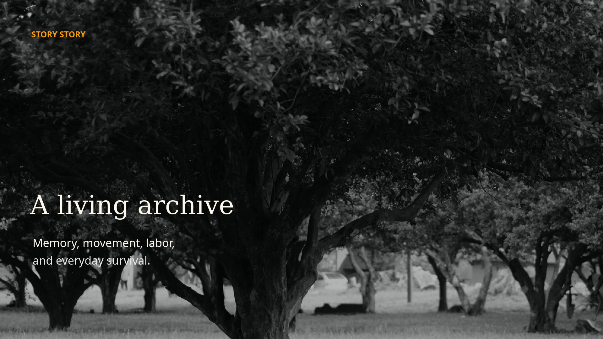

What shipped
The through-line is not a category. It is accompaniment: understand the real context, build a useful artifact, leave behind something other people can learn from, adapt, or use.
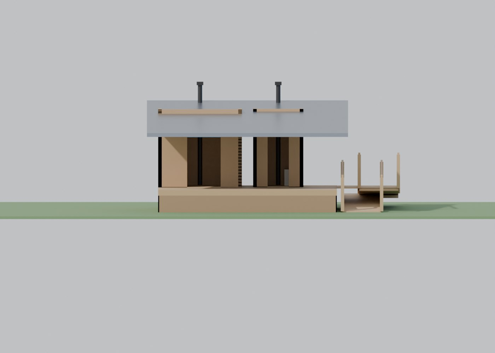
Land stewardship
Accessible dry-cover sanitation, 3D models, layout options, vent strategies, and a build report for a community weekend.
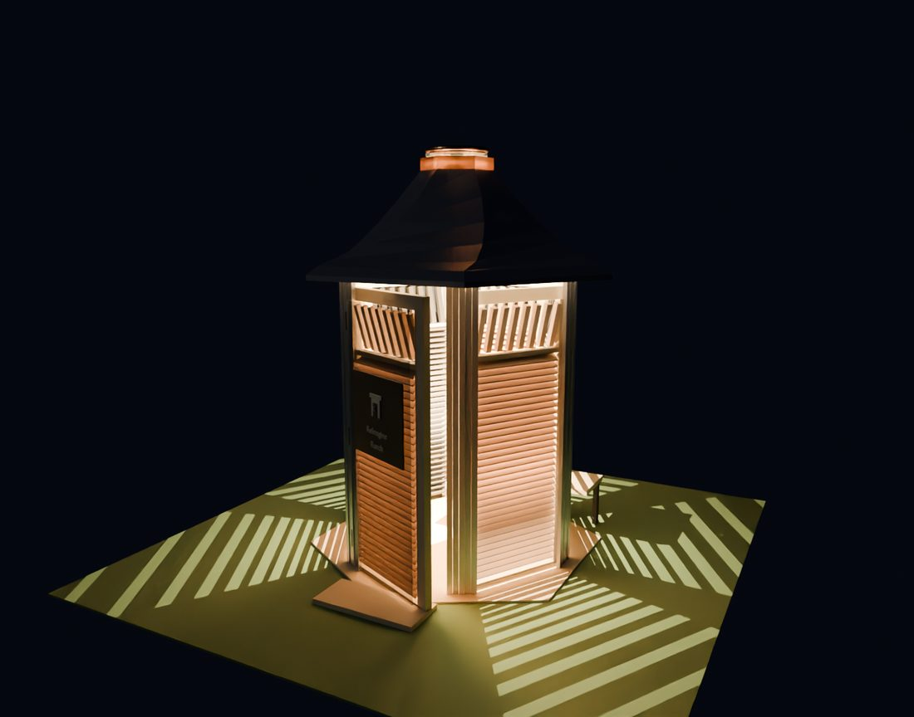
Public health
Bucket-of-Doom research, placement logic, maintenance procedures, and land-health framing for Austin parcels.
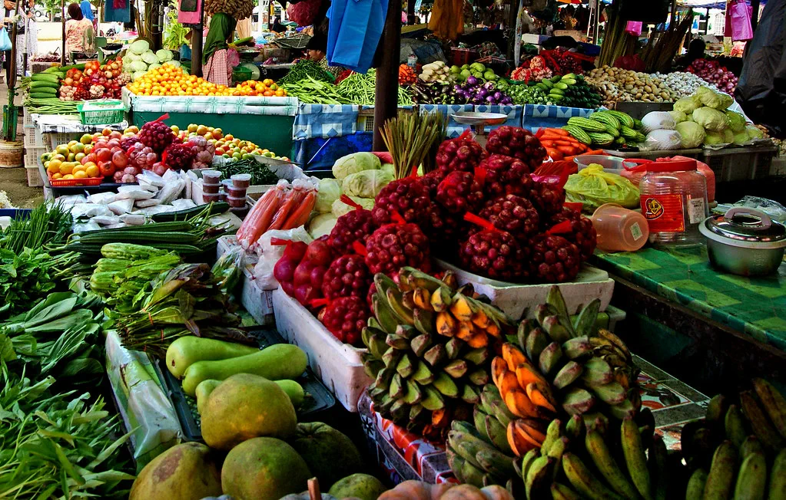
Water access
A mobile-first river PWA covering Central Texas access points, live USGS conditions, crew observations, and offline field logging.
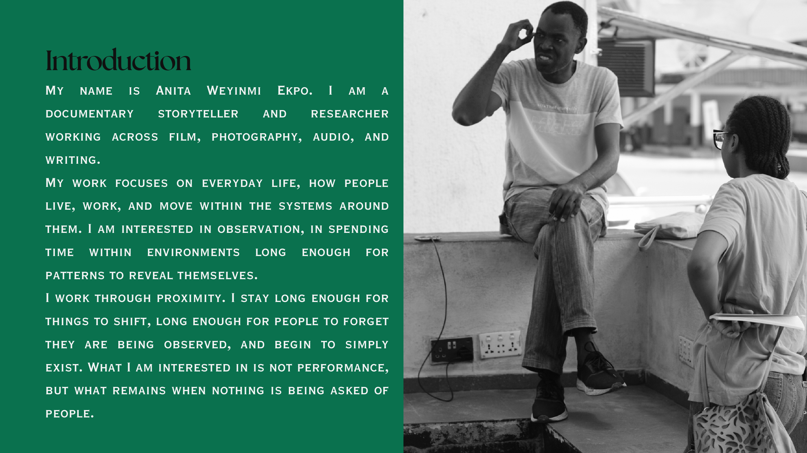
Memory work
A refined public page, proof letter, deck excerpts, and video brief for Story Story after La Wayaka Current accepted the project.
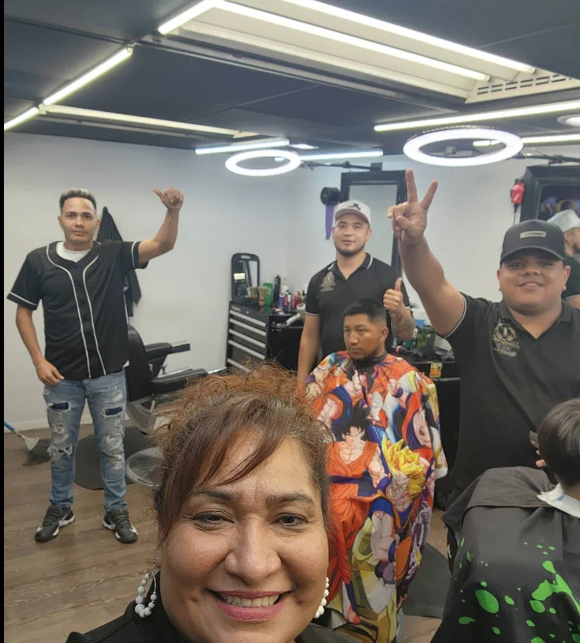
Small business
Practical websites and pitch pages that help businesses become easier to find, understand, support, and share.
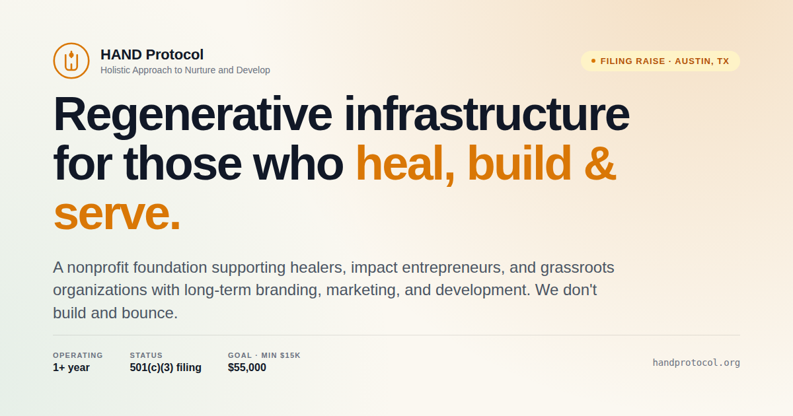
Sovereign tools
AI and software support designed to be portable, group-owned, and open source where openness strengthens the commons.
Web3 roots
Giveth, direct wallets, and earlier Web3 tooling showed how open contribution systems could fund public-good work.
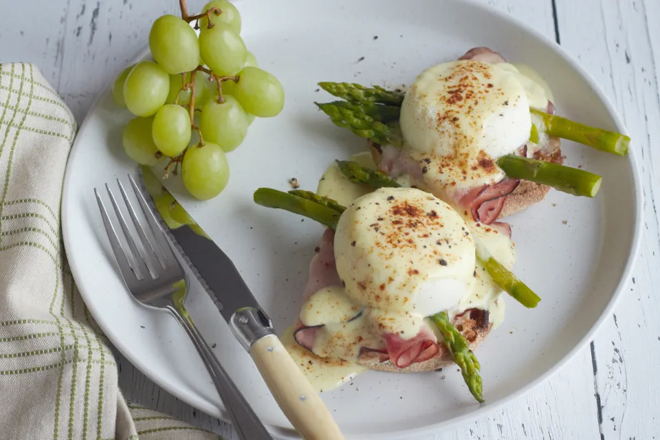
Food share
Eggs as an easy delivery system for protein, balanced with nuts and shelf-stable staples that can move through local routes.
Why small business matters
A local business is often a workplace, an informal care site, a neighborhood signal, a first job, a family support system, a public restroom stop, a food access point, a repair hub, or a safe place to sit. When its infrastructure improves, the effect is not only commercial.

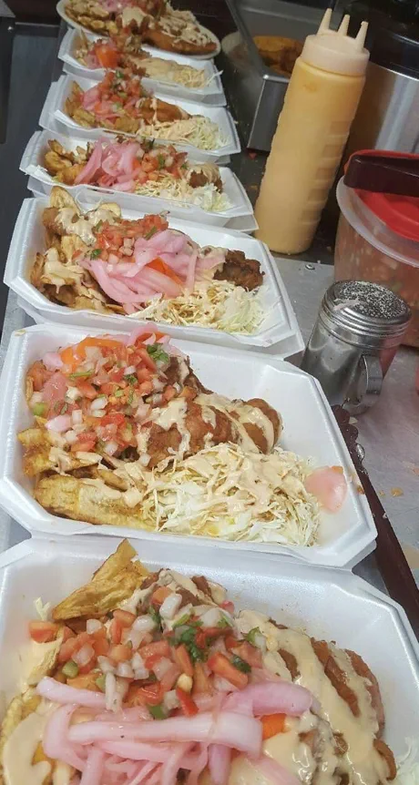
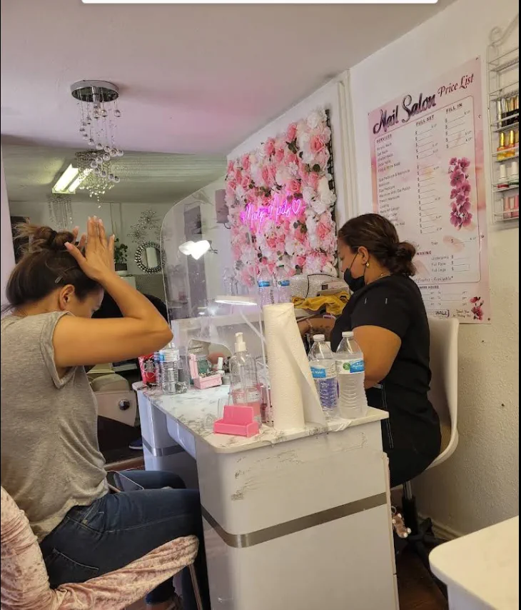
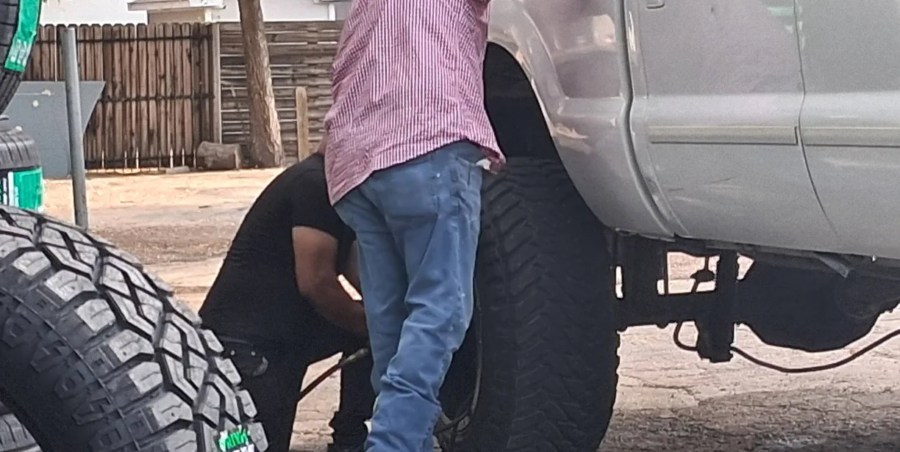